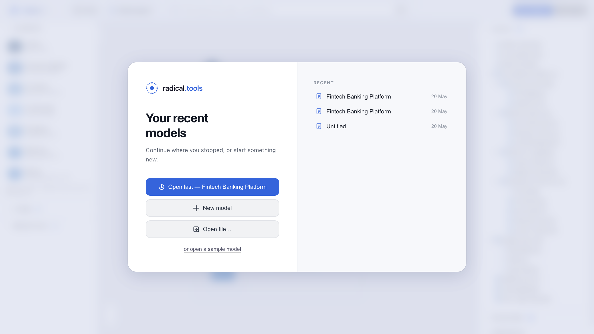
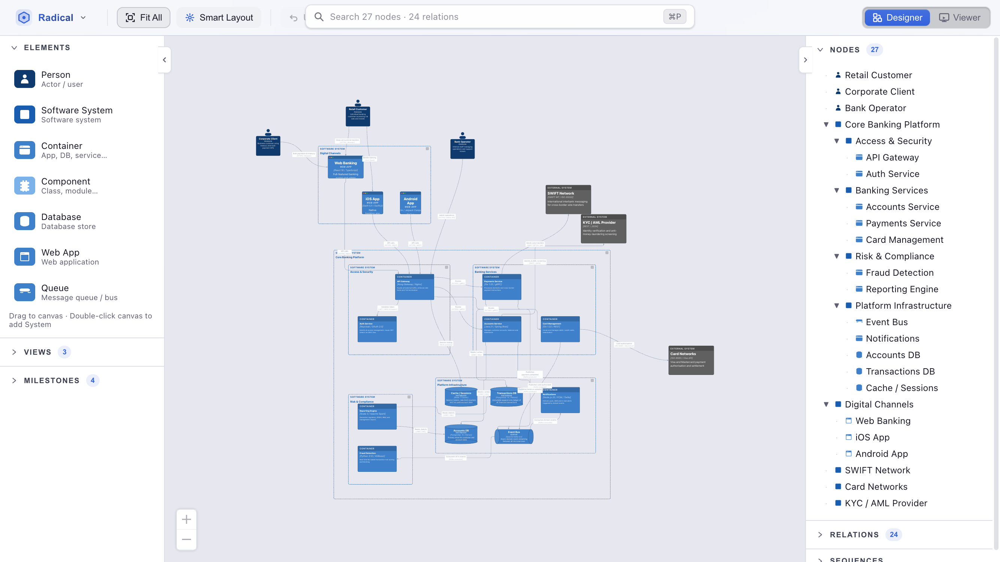
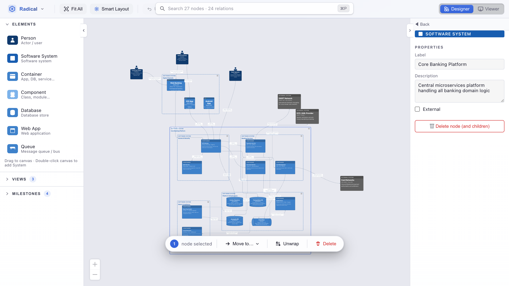
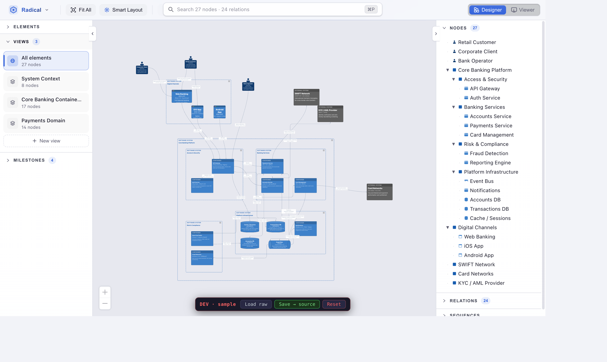
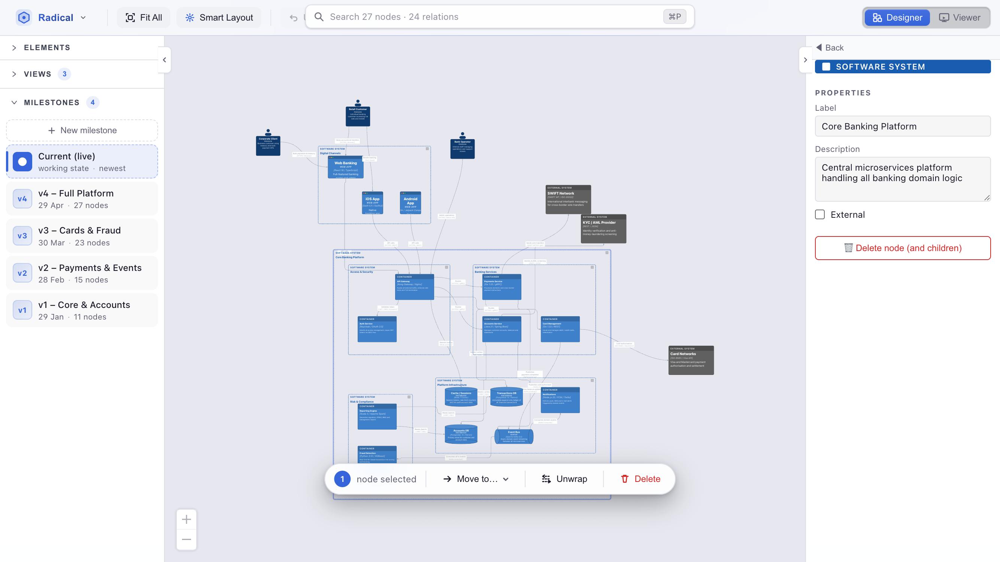
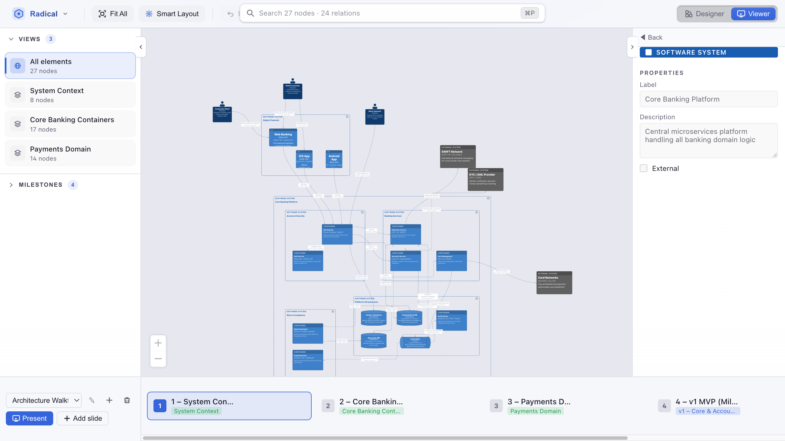
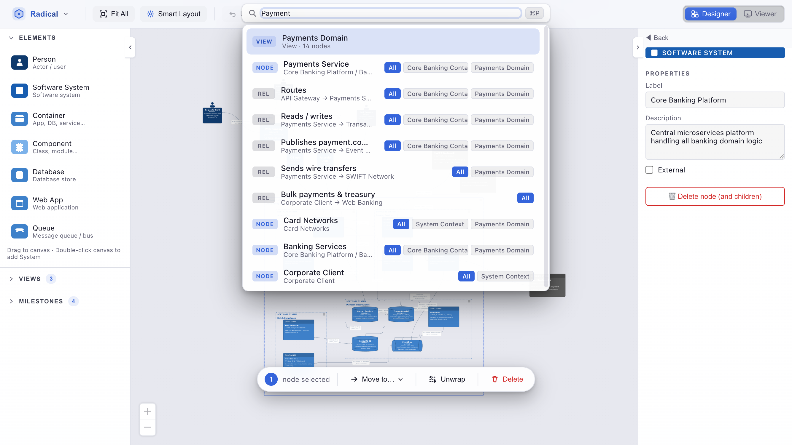
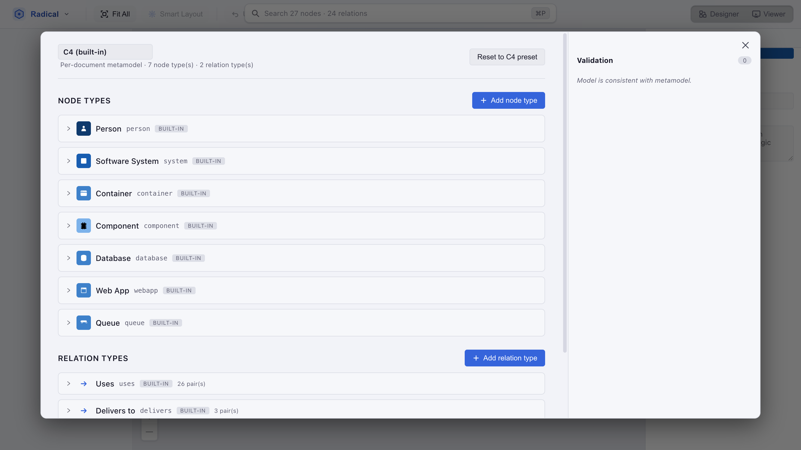

How to use Radical.Tools
A complete guide to building architecture models, creating views, tracking history with milestones, and using the AI assistant.
Getting started
When you launch the app for the first time you'll see the Welcome screen.
Choose a metamodel (C4 is the default), optionally load the sample Fintech Banking Platform
model, or import an existing .json file. The app opens into Designer mode
with an empty canvas.
The UI has three main zones:
- Left panel — element palette (drag to add) and the full node tree.
- Canvas — the main editing area, powered by React Flow.
- Right panel — properties of the selected element, plus the view/milestone panel and the AI chat.
The toolbar at the top controls layout, undo/redo, and the Designer ↔ Viewer mode switch. The Radical menu (top-left logo button) gives access to model management, metamodel editor, theme, Smart Fit, AI settings, and the connection-key preference.

.json file from disk.
Adding elements
There are two ways to add a new node:
- Drag from the palette — grab any type from the left panel and drop it anywhere on the canvas. The node is created at the drop position.
- Double-click the canvas background — double-clicking an empty area creates a new System node at that exact position. Rename it immediately in the right panel.
Nesting (parent–child)
Elements can be nested to represent containment (e.g. Containers inside a System). Drop a child element on top of a parent node — the parent highlights to confirm the drop target. You can also change the parent via the Parent field in the properties panel. Nested children can be collapsed/expanded by clicking the triangle icon on the parent node or the toggle in the tree view.
Connecting elements
Relations are created by drag-to-connect:
- Hold the connection modifier key (default: Alt).
- Press and hold the mouse button on the source node.
- Drag to the target node and release.
A preview line is drawn while you drag. The relation is validated against the active metamodel — only allowed source→target type combinations produce a connection.
Click a relation to select it and edit its label, technology, and description in the right panel. The edge label is rendered on the canvas and updates live.
Editing & properties
Click any node or edge to select it. Its properties appear in the right panel:
- Label — the display name shown on the canvas.
- Technology / description — secondary text rendered inside the node.
- Type — change the element type (e.g. Container → Database). The node re-renders with the new shape and colour.
- Parent — reparent the element by picking a different parent from the dropdown.
To delete a selected element press Delete or ⌫ Backspace. A confirmation dialog appears if the node has children or connected relations.
Undo / Redo — every action (add, edit, move, delete, layout) is tracked. Use ⌘Z / Ctrl+Z to undo and ⌘⇧Z / Ctrl+Y to redo.

Views
A view is a filtered window onto the shared model. Every element lives in the model once; views decide which subset is visible. This means you can create a high-level System Context view and a detailed Container view without duplicating any data.
Creating and managing views
- Switch to Viewer mode (toolbar, top-right).
- Click + New view in the view list on the right panel.
- Give the view a name (e.g. "System Context", "Payment flow").
- Use the eye icons in the node tree to include or exclude elements for this view.
- Each view stores its own layout — rearrange nodes here without affecting other views.
Dynamic views
Set a view's type to Dynamic to add sequence numbers to relations. Each edge gets a step number (1, 2, 3…) that appears on the canvas. In presentation mode, dynamic views replay the steps one at a time — ideal for showing an interaction flow.
View layout mode
Each view can independently use Auto (Smart Layout) or Tree layout. Switch via the view's settings panel. In tree mode the Smart Layout button changes to Tree Layout.

Milestones
A milestone is a named snapshot of the entire model state — nodes, relations, views, and layout positions.
Creating a milestone
- Click the camera icon in the toolbar (or open the milestones panel in the right panel).
- Enter a name (e.g. "v1 — initial draft", "After sprint 3") and an optional date.
- Click Save milestone.
Browsing and restoring
All milestones are listed in the right panel with their names, dates, and node/relation counts. Click any milestone to preview it. Click Restore to revert the live model to that snapshot (a new undo entry is created, so you can undo the restore).

Layout engines
Radical.Tools ships three layout engines, each with a different trade-off:
| Engine | Style | Best for |
|---|---|---|
| Smart Layout default | Simulated annealing + ELK ensemble | General diagrams — picks the cleanest result automatically with edge-crossing minimisation and aspect-ratio penalty. |
| Tree Layout | Hierarchical nested-tree (ELK) | Diagrams with a clear parent–child hierarchy. Enable per-view via the view settings panel. |
| WebCola (live) | Force-directed physics | Exploratory editing — nodes repel/attract in real time as you drag. Settles to a stable position. Toggled from the ELK/Cola button in the toolbar. |
Smart Fit
Enable Smart Fit (Radical menu → View → Smart Fit) to automatically zoom and pan the viewport to fit all visible nodes after every layout run or model change.
Fit All
The Fit All button in the toolbar instantly fits all visible nodes into the current viewport without triggering a re-layout.
Presentation mode
Presentation mode turns your views into a fullscreen slide deck.
- Switch to Viewer mode.
- Drag views into the desired order in the slide deck at the bottom of the screen.
- Click Present or press F5 to go fullscreen.
- Navigate between slides with the on-screen arrow buttons or keyboard.
- Dynamic views replay their sequence steps one at a time — each press of the forward arrow reveals the next numbered relation.
- Press Esc or F5 again to exit presentation mode.

AI integration
The built-in AI assistant can answer questions about the model, detect gaps, and apply natural-language changes as structured patches.
Opening the AI chat
Press ⌘P / Ctrl+P to focus the quick-search bar.
Type > (right angle bracket) to switch into AI mode.
The bar expands into a chat thread.
Example prompts
- "Add a Redis cache container between the API Gateway and the User Service"
- "What components talk directly to the database?"
- "Rename Payment Service to Payment Processor and update all its relations"
- "List all containers that have no outgoing relations"
Destructive changes are shown as a diff before being applied. Press ⌘↵ / Ctrl+Enter to send a message to the AI without applying any pending patch.
Configuring providers
Go to Radical menu → AI → AI providers… to configure your preferred LLM. Supported providers:
- Ollama — local models, no API key required.
- OpenAI — GPT-4o and other OpenAI models.
- Anthropic Claude — Claude 3 / Claude 4 family.
- Google Gemini — Gemini 1.5 / 2.0 models.
localStorage.
Nothing is proxied — all requests go directly from the app to the provider.

> first to switch into AI mode and send a natural-language prompt instead.Metamodel editor
The metamodel defines which element types and relation types exist in your diagram, along with their colours, icons, and allowed connections.
Open it via Radical menu → Schema → Metamodel editor… The canvas is replaced by the metamodel editor. Changes take effect immediately — new types appear in the palette and existing nodes re-render with any updated colours.
Built-in metamodels
- C4 — Person, Software System, Container, Component, Database, Web App, Queue, Domain.
You can add custom node types (with a custom label, icon path, and colour) or remove types that don't apply to your architecture. Relation types let you define which source and target combinations are valid.

Files & documents
Radical.Tools stores models as plain JSON files. You can diff them in git, edit them in a text editor, and automate transformations with any script.
Document manager
Open Radical menu → Models → Manage models… to create, rename, duplicate, or delete models. Each model is either:
- LOCAL — stored in browser
localStorage(survives page reloads, tied to the browser profile). - FILE — an explicit
.jsonfile opened from the filesystem via the Electron file dialog.
Import / Export
In the document manager, use Export to save the active model as a
.json file, or Import to load one. In the desktop (Electron) app
this opens a native file dialog; in the browser it uses a file input / download.
Keyboard shortcuts
| Action | Mac | Windows / Linux |
|---|---|---|
| Quick search / AI chat | ⌘P | Ctrl+P |
| Undo | ⌘Z | Ctrl+Z |
| Redo | ⌘⇧Z | Ctrl+Y |
| Delete selected element | Delete / ⌫ | Delete / Backspace |
| Start / stop presentation | F5 | F5 |
| Send to AI (no patch) | ⌘↵ | Ctrl+Enter |
| Close / cancel / exit | Esc | Esc |
| Add System node at position | double-click canvas background | |
| Create relation | hold Alt + drag (configurable) | |
| Collapse/expand parent node | click triangle icon on node | |
| Fit all nodes in viewport | Fit All button in toolbar | |